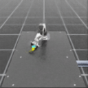
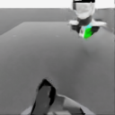
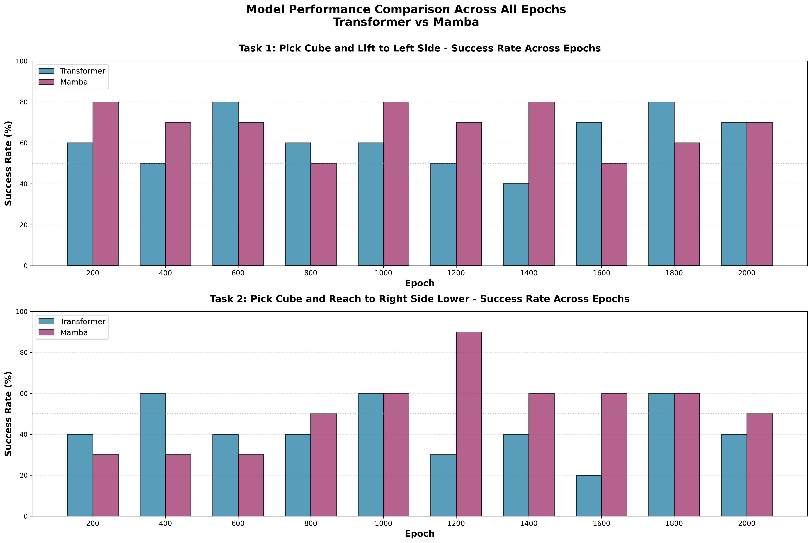
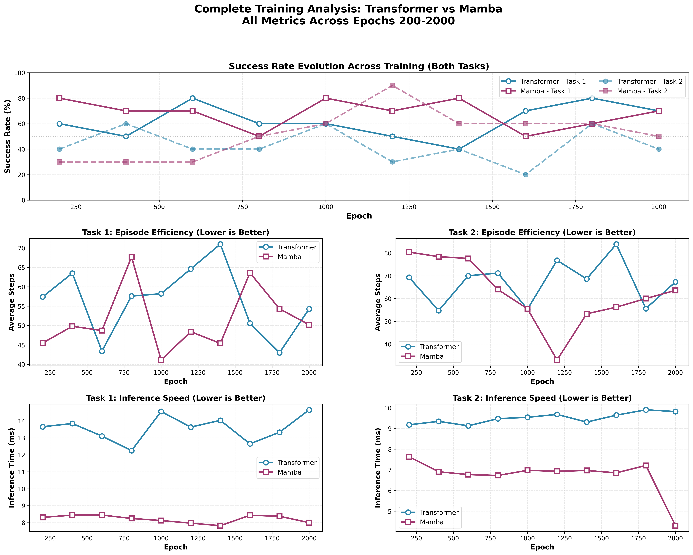

OpenARM-VLA#
OPEN-SOURCE CONTRIBUTION to Reazon Research · OpenArm
A Vision-Language-Action learning framework for robotic manipulation on the OpenArm platform in NVIDIA Isaac Sim — contributed back to the open-source OpenArm ecosystem. Benchmarks MambaVLA state-space policies against the MDT Transformer under identical perception, control, and simulation conditions.

Introduction#
OpenARM-VLA is a Vision-Language-Action learning framework developed for robotic manipulation using the OpenArm platform in NVIDIA Isaac Sim. I evaluate it with both MambaVLA and MDT Transformer architectures. The primary objective is to systematically compare state-space and transformer-based policies on a cube-lifting task involving directional motion commands.
To achieve this, I construct a synthetic data generation pipeline with a reinforcement-learning teacher policy that produces large-scale demonstration trajectories. This setup allows for fair benchmarking across architectures under identical perception, control, and simulation conditions. Experimental results demonstrate reliable task completion, establishing a foundation for scalable imitation learning and future foundation-model training for robotic manipulation.
Pipeline Overview#
┌───────────────────────────────────────────────────────────────┐
│ OpenARM Cube Lifting Task Environment (Isaac Sim) │
│ • Cameras for observations │
│ • Multi-direction lifting commands │
│ • RGB camera observations │
│ • Randomized cube poses │
└───────────────────────────────────────────────────────────────┘
┌───────────────────────────────────────────────────────────────┐
│ Rollout Trajectory Collection │
│ { Images | Robot States | Language Commands | Actions } │
└───────────────────────────────┬───────────────────────────────┘
▼
┌──────────────────────────┐
│ Episode Evaluation │
│ SUCCESS → Save Demo │
│ FAILURE → Discard │
└─────────────┬────────────┘
▼
┌───────────────────────────────────────────────────────────────┐
│ Demonstration Dataset Store │
│ • Large-scale trajectories │
│ • Balanced directions · Train / Val / Test splits │
└───────────────────────────────┬───────────────────────────────┘
▼
┌───────────────────────────────────────────────────────────────┐
│ Imitation Learning via Flow Matching │
│ Diffusion Policy Training │
│ │
│ Conditioning: Visual Tokens · Language Tokens · Robot State │
│ │
│ Backbones: ┌───────────────┐ ┌────────────────────┐ │
│ │ MambaVLA │ │ Transformer Model │ │
│ │ (State Sp.) │ │ (Attention-based) │ │
│ └───────┬───────┘ └─────────┬──────────┘ │
│ └────────┬─────────────┘ │
│ ▼ │
│ Action Trajectory Predictor │
│ (Joint Targets + Gripper Command) │
└───────────────────────────────┬───────────────────────────────┘
▼
┌───────────────────────────────────────────────────────────────┐
│ Policy Evaluation in Simulation │
│ • Success Rate • Completion Time • Failure Modes │
└───────────────────────────────────────────────────────────────┘
Simulation Environment#
I used the OpenArm-included Isaac-Lift-Cube-OpenArm-v0 environment. Since the default RL env has no cameras, I created cameras for the play env Isaac-Lift-Cube-OpenArm-Play-v0.
Three cameras were added:
camera_link0— attached to the link-0 of the robotcamera_fixed— attached to the fixed frame of the robotmain_camera— used to record videos of the robot performing the task
Dataset Camera Views#


The camera config added to openarm_isaac_lab/source/openarm/openarm/tasks/manager_based/openarm_manipulation/unimanual/lift/lift_env_cfg.py:
camera_link0: TiledCameraCfg = TiledCameraCfg(
prim_path="{ENV_REGEX_NS}/Robot/openarm_link0/CameraLink0",
offset=TiledCameraCfg.OffsetCfg(
pos=(0.0, 0.0, 0.2),
rot=(-0.29884, 0.64086, -0.64086, 0.29884),
),
data_types=["rgb"],
spawn=sim_utils.PinholeCameraCfg(
focal_length=12.0,
focus_distance=400.0,
horizontal_aperture=20.955,
clipping_range=(0.1, 20.0),
),
width=128,
height=128,
)
Dataset & Demonstrations#
I collected 100 demonstrations per task as defined in conf/tasks.yaml. Dataset generation uses the src/generate_dataset.py script.
If a task is successful, the script saves the demo to
data/demo_<id>/If it fails, the demo is skipped
tasks:
task0:
name: pick_the_cube_and_lift_it_to_the_middle_of_the_table
target_pose: "0.25,0.0,0.25"
task1:
name: pick_the_cube_and_reach_to_the_right_side_but_slighlty_lower
target_pose: "0.25,-0.20,0.20"
Each demo’s structure:
data/demo_<id>/
actions (T, 8) float32
dones (T,) int64
rewards (T,) float32
robot_states (T, 9) float32
obs/
agentview_rgb (T, 128, 128, 3) uint8
eye_in_hand_rgb (T, 128, 128, 3) uint8
joint_states (T, 6) float32
gripper_states (T, 2) float32
Stored as hdf5 files. Side-by-side demonstrations:
Training the Model#
Models are trained via scripts/train_model.sh. Both Mamba and Transformer backbones are configurable from conf/config.yaml. I trained for 500 epochs and saved checkpoints in outputs/train/mamba/ and outputs/train/transformer/. Eval videos land in outputs/eval/....
Image embeddings via ResNet:
obs_encoder = MultiImageResNetEncoder(
camera_names=["agentview", "eye_in_hand"],
latent_dim=256,
input_channels=3,
)
Language embeddings via CLIP:
language_encoder = LangClip(
freeze_backbone=True,
model_name="ViT-B/32",
)
Model size summary:
Total parameters: 177,773,960
Trainable: 26,496,648
Frozen: 151,277,312
Mamba and Transformer variants have near-identical parameter counts, ensuring fair comparison.
model_mamba = create_mambavla_model(
dataloader=None,
camera_names=["agentview", "eye_in_hand"],
layers=5,
latent_dim=256,
action_dim=8,
lang_emb_dim=512,
embed_dim=256,
obs_tok_len=2,
action_seq_len=5,
model_type="mamba",
)
transformer_cfg={
"n_heads": 8,
"attn_pdrop": 0.1,
"resid_pdrop": 0.1,
"mlp_pdrop": 0.0,
"bias": False,
"use_rot_embed": False,
"rotary_xpos": False,
}
Evaluation Metrics#
I evaluated the models on:
Success Rate
Inference Time
Average Episode Steps
Average Inference Time
Training Time
Computation Cost
Success Rate Definition#
Tasks: pick_the_cube_and_lift_it_to_the_middle_of_the_table and pick_the_cube_and_reach_to_the_right_side_but_slighlty_lower.
I check the L2 error between the target pose and the current cube pose. If the error is under threshold → success, otherwise → failure.
Results#
Detailed Performance Table#
Epoch |
T1 Transformer |
T1 Mamba |
T2 Transformer |
T2 Mamba |
T1 Steps Tr |
T1 Steps Mamba |
T2 Steps Tr |
T2 Steps Mamba |
|---|---|---|---|---|---|---|---|---|
200 |
60% |
80% ⭐ |
40% |
30% |
57.4 |
45.5 ⭐ |
69.3 ⭐ |
80.4 |
400 |
50% |
70% ⭐ |
60% ⭐ |
30% |
63.5 |
49.8 ⭐ |
54.7 ⭐ |
78.4 |
600 |
80% ⭐ |
70% |
40% ⭐ |
30% |
43.4 ⭐ |
48.7 |
70.0 ⭐ |
77.6 |
800 |
60% ⭐ |
50% |
40% |
50% ⭐ |
57.6 ⭐ |
67.7 |
71.2 |
64.0 ⭐ |
1000 |
60% |
80% ⭐ |
60% |
60% |
58.2 |
41.1 ⭐ |
55.3 ⭐ |
55.5 |
1200 |
50% |
70% ⭐ |
30% |
90% ⭐ |
64.6 |
48.4 ⭐ |
76.8 |
33.0 ⭐ |
1400 |
40% |
80% ⭐ |
40% |
60% ⭐ |
71.0 |
45.4 ⭐ |
68.6 |
53.3 ⭐ |
1600 |
70% ⭐ |
50% |
20% |
60% ⭐ |
50.6 ⭐ |
63.6 |
83.9 |
56.2 ⭐ |
1800 |
80% ⭐ |
60% |
60% ⭐ |
60% |
43.0 ⭐ |
54.3 |
55.6 ⭐ |
60.0 |
2000 |
70% |
70% |
40% |
50% ⭐ |
54.3 ⭐ |
50.2 |
67.3 ⭐ |
63.6 |


Executive Summary#
Comprehensive analysis of 10 training checkpoints reveals that Mamba consistently outperforms Transformer across both tasks:
Task 1 (Lift Left): Mamba 68.0% vs Transformer 62.0% (+6%)
Task 2 (Reach Right): Mamba 52.0% vs Transformer 43.0% (+9%)
Best performance: Mamba achieves 90% success rate on Task 2 at epoch 1200 — the highest of any evaluation.
Success Rate Statistics#
Metric |
Transformer |
Mamba |
Winner |
|---|---|---|---|
T1 — Mean |
62.0% |
68.0% |
Mamba (+6%) ⭐ |
T1 — Max |
80% |
80% |
TIE |
T1 — Min |
40% |
50% |
Mamba ⭐ |
T2 — Mean |
43.0% |
52.0% |
Mamba (+9%) ⭐ |
T2 — Max |
60% |
90% |
Mamba (+30%) ⭐ |
T2 — Min |
20% |
30% |
Mamba ⭐ |
Learning Trajectory#
Task 1 pattern. Both models show relatively stable performance with periodic peaks and valleys — no clear upward or downward trend. Both learned this task early and maintained capability.
Task 2 pattern.
Mamba shows clear learning progression — early (200-600) at a 30% baseline, mid (800-1200) breakthrough to 50-90%, late (1400-2000) stabilizes at 50-60%.
Transformer is more erratic — alternates between 20-60% throughout with no clear improvement trajectory. Task 2 sits at the edge of Transformer’s capability here.
Rollouts#
Failures Faced & How I Solved Them#
1) Multi-cube scene caused floating cubes#
Issue: When I spawned 3 cubes and shifted their colors to select a target cube, some cubes spawned in mid-air and caused collisions or unstable physics.
Fix: I reduced the scene to a single cube for the lifting policy and fixed the target pose for that cube. This kept the scene stable and matched the policy assumptions.
When the episode changes and the cube is placed in a different position, extra frames get recorded. These end up in the dataset — the model trains on noisy frames and struggles to learn the task.
Solution: I added a short settling phase at the beginning of each episode. Publish zero actions for a few steps, let the robot and physics settle, then start recording. Isaac Sim needs time to stabilize physics after the cube moves, which produces transient frames. A cleaner fix is to use the built-in DexCube, but I needed different cube colors so I kept the custom cube and constrained the task to simple target directions.
2) Camera orientation mismatch#
Issue: Cameras initially produced incorrect viewpoints because the quaternion order/axis convention was wrong.
Fix: Converted orientation from w, x, y, z → -x, w, z, -y for Isaac Sim and verified the view. Tuned focal length to 12 for clearer observations.
3) Dataset contamination and failed rollouts#
Issue: Some episodes failed because cube placement was too fast, and early frames contained visuals from the previous episode.
Fix: Added warm-up steps at the start of each rollout and skipped failed episodes (no save if success conditions weren’t met). Improved dataset quality.
4) Mamba + IsaacLab environment conflicts#
Issue: mamba-ssm initially failed to build under Python 3.11 (required by Isaac Sim 5.1.0), and CUDA kernels were incompatible with the RTX PRO 6000 (sm_120).
ImportError: /home/navaneet/miniconda3/envs/lab/lib/python3.11/site-packages/
selective_scan_cuda.cpython-311-x86_64-linux-gnu.so:
undefined symbol: _ZN3c104cuda29c10_cuda_check_implementationEiPKcS2_jb
Fix: Installed mamba-ssm from source and upgraded to a PyTorch build that supports newer CUDA architectures:
pip install --no-cache-dir --no-binary :all: --no-build-isolation "mamba-ssm[causal-conv1d]"
pip install --pre torch torchvision torchaudio --index-url https://download.pytorch.org/whl/nightly/cu128
pip install mamba-ssm --no-build-isolation
5) Task–policy mismatch#
Issue: I initially added two cubes but the teacher policy was trained for a single cube, so the policy moved to incorrect targets.
Fix: Constrained the environment to a single cube and fixed the command to a consistent target pose (e.g., middle position) — aligned with the trained policy.
6) Environment setup steps#
Steps taken to stabilize the project setup:
Created a new environment config and registered it in the task init
Added cameras for data collection
Disabled visualization markers to avoid distraction in RGB frames
Verified task registration and command targets before rollout
My main goal was to train the model with both Transformer and Mamba architectures and compare. I chose a simple single-cube task and gave each variant a direction like lift_it_to_the_middle_of_the_table or reach_to_the_right_side_but_slighlty_lower so the comparison is clean and reproducible.